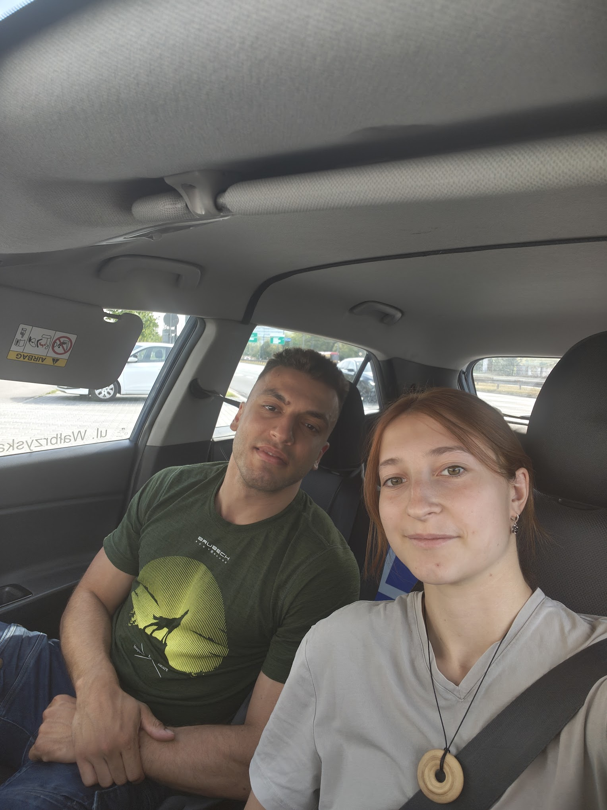
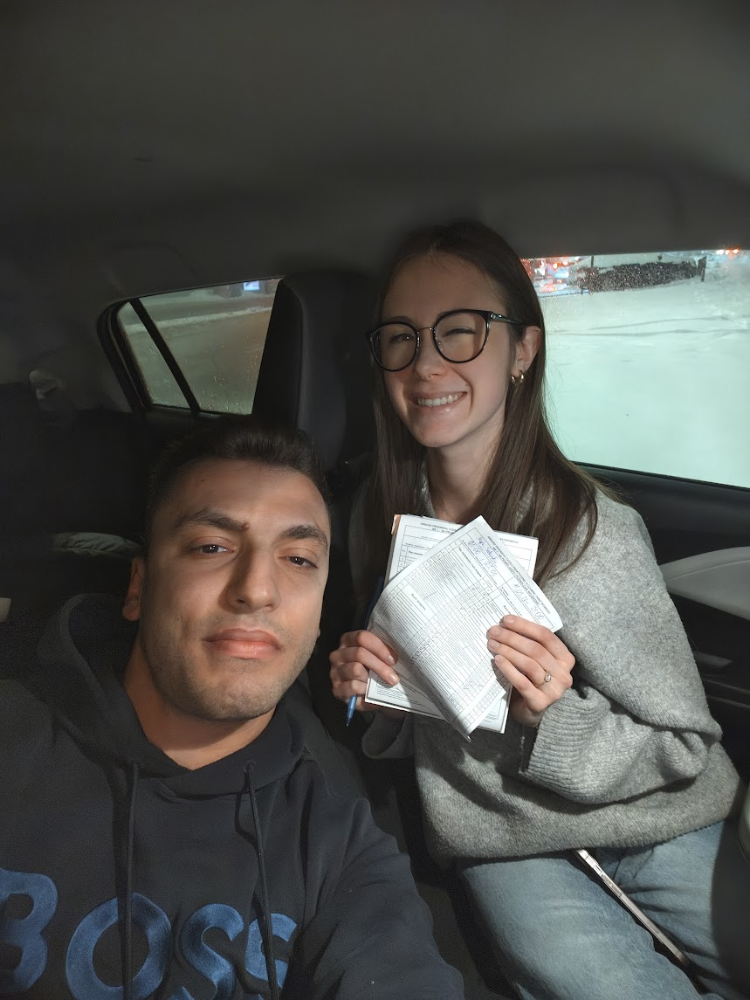
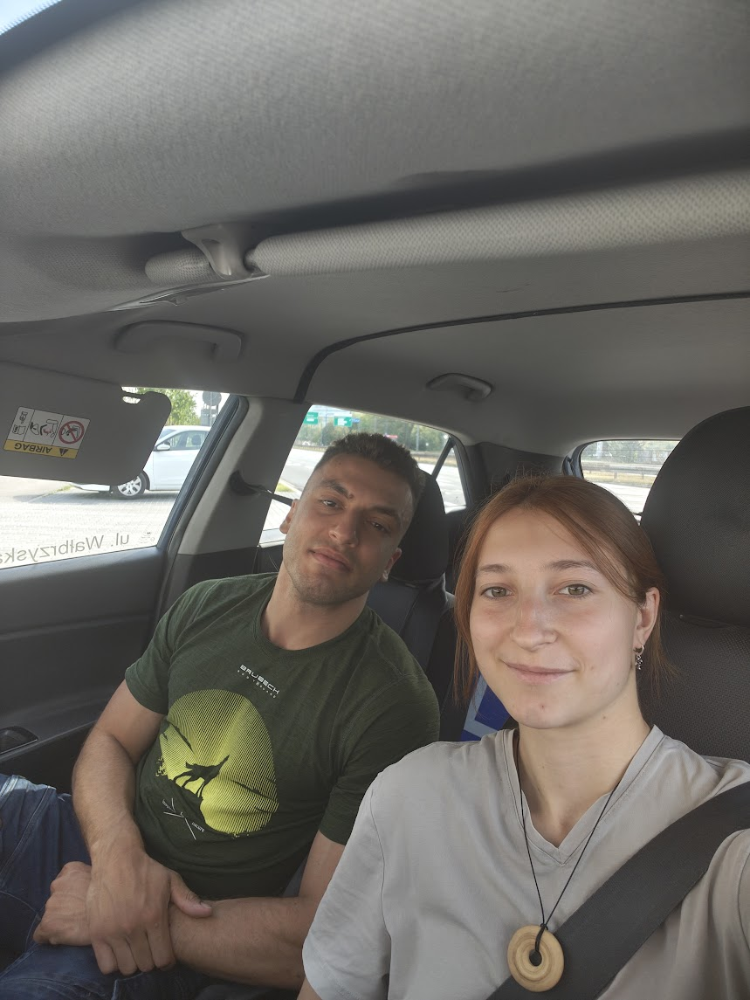
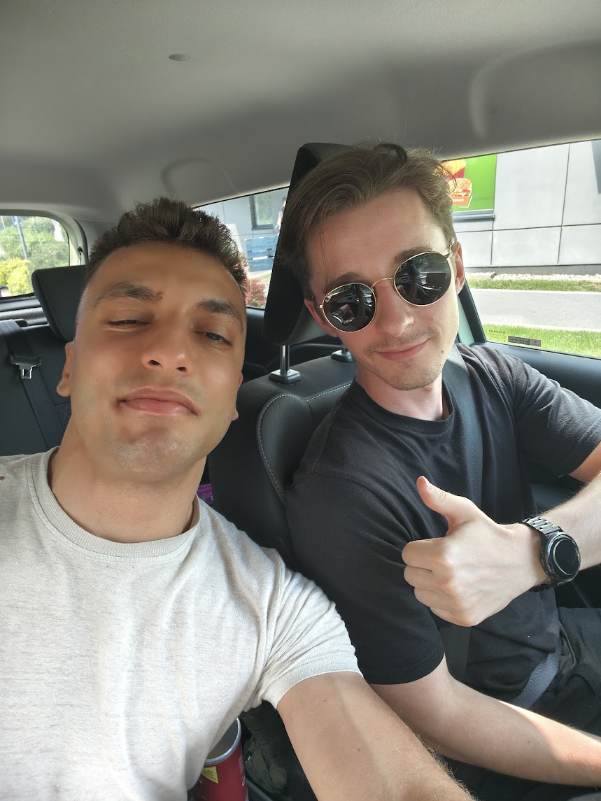
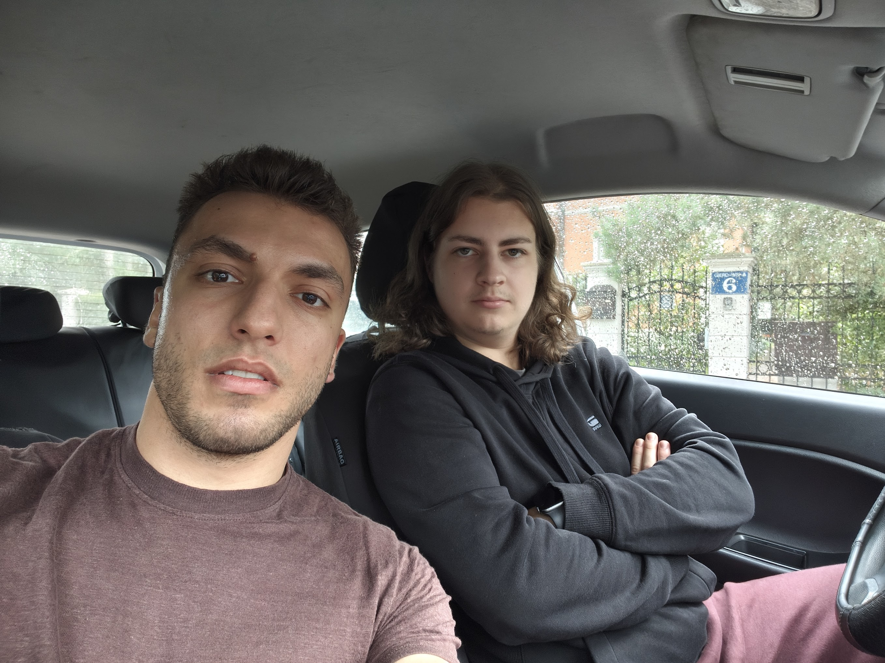
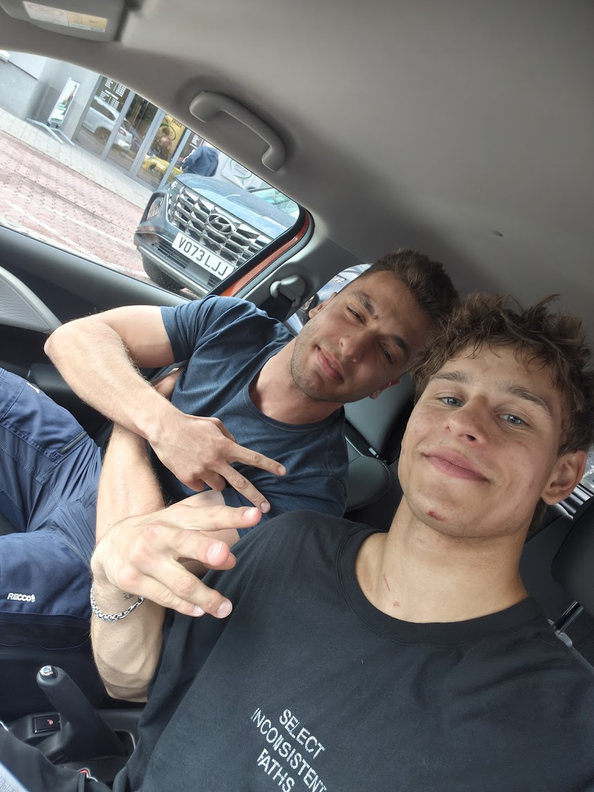
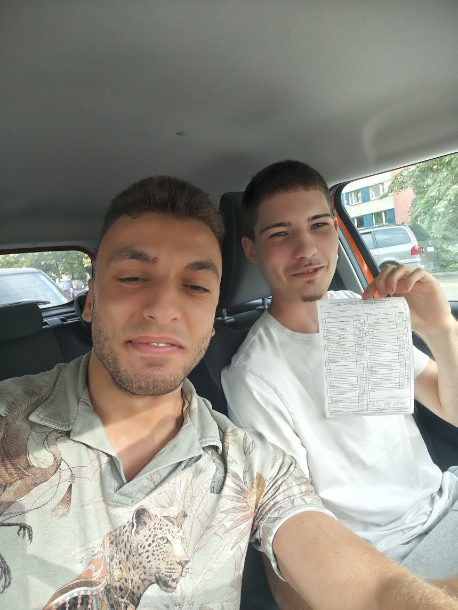

Powrót za kierownicę
Dla osób, które mają prawo jazdy, ale od dawna nie prowadziły. Spokojne tempo, oswojenie z autem, ruchem miejskim i aktualnymi przepisami — bez stresu i oceniania.
Warszawa · Wawer i okolice
Odświeżenie umiejętności po przerwie, przygotowanie do egzaminu na konkretnych trasach WORD oraz jazdy indywidualne dopasowane do Twoich potrzeb.
Umów jazdęTrzy sposoby, żeby poczuć się pewnie na drodze.
Dla osób, które mają prawo jazdy, ale od dawna nie prowadziły. Spokojne tempo, oswojenie z autem, ruchem miejskim i aktualnymi przepisami — bez stresu i oceniania.
Jazda po realnych trasach egzaminacyjnych, żeby dzień egzaminu nie był pierwszym razem, gdy je widzisz.
Parkowanie równoległe i prostopadłe, trasa szybkiego ruchu, jazda nocna, jazda w trudnych warunkach — program ułożony pod to, czego akurat potrzebujesz.
Jedna stawka godzinowa, bez ukrytych kosztów.
Jedna jazda trwa minimum 2, maksimum 4 godziny. Pakiety wielogodzinne — wkrótce.
Kursanci, którzy wyrazili zgodę na publikację zdjęcia.







Najszybciej telefonicznie — ustalimy termin, długość jazdy i miejsce spotkania.
Poniedziałek – piątek: 10:00 – 20:00
Sobota i niedziela: 10:00 – 17:00
Terminy poza tymi godzinami — do ustalenia telefonicznie.
Instruktor: Michael
Telefon: 690 360 164
E-mail: MichaelRabti@gmail.com
Obszar działania: Wawer i okolice Warszawy — dojazd do innych dzielnic po ustaleniu.